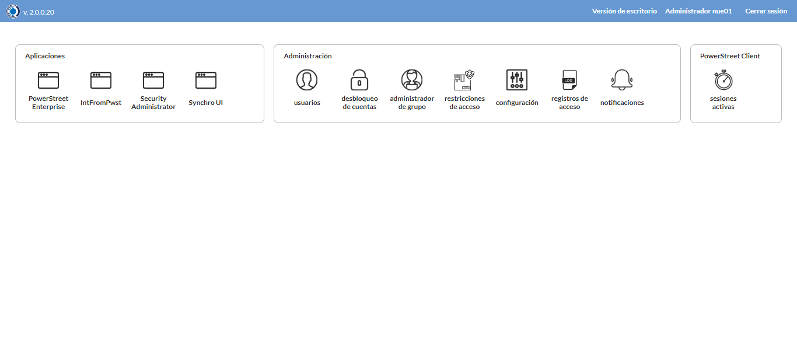
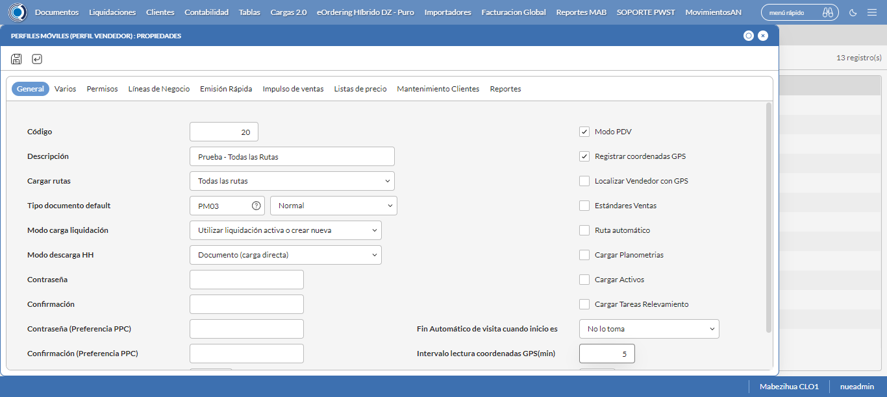
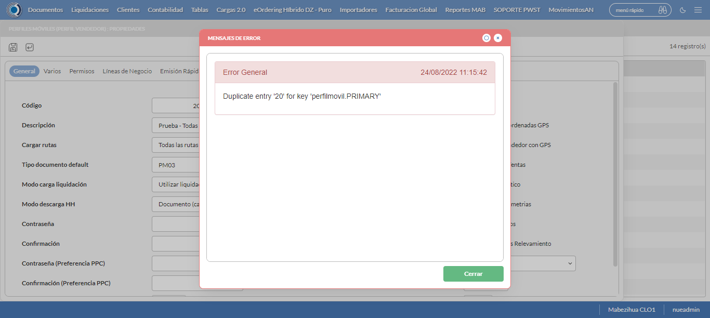
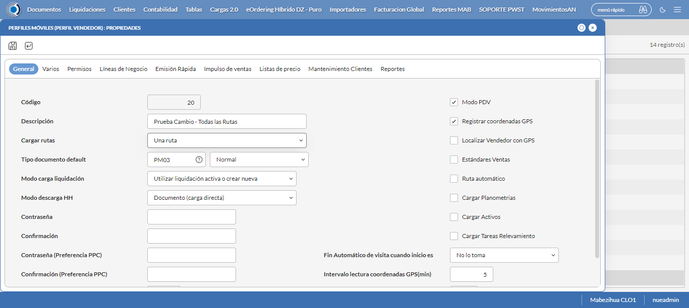

Desarrollado por : Area de Testing PWST
Fecha y hora de inicio : 2022-08-24 09:06:24
Duracion : 0:12:36.310093
Resultado : Total 8，Correctos 7 ，Errores 1 ，Taza de resultado 87.50%
Resumen 87.50% Errores 1 Fallidos 0 Correctos 7 Test realizados 8
| Caso de Prueba | Total | Correctos | Fallido | Error | Detalles | Captura del error |
| PerfilesMoviles.Test: Escenario 1 de Perfiles Moviles | 8 | 7 | 0 | 1 | Detalles | |
test |
pt1_1: 2022-08-24 09:06:26,007 - root - INFO - Se abre el chrome
2022-08-24 09:06:28,863 - root - INFO - Entra a la URL
2022-08-24 09:06:28,993 - root - INFO - Maximiza la pantalla
2022-08-24 09:06:32,065 - root - INFO - Cambia al frame
|
|
||||
test_000: Ingresa a la base de datos |
pt1_2: 2022-08-24 09:06:35,164 - root - INFO - Escribe el usuario
2022-08-24 09:06:35,273 - root - INFO - Escribe la contraseña
2022-08-24 09:06:35,422 - root - INFO - Se dio clic en el boton ingresar
2022-08-24 09:06:37,911 - root - INFO - Ejecutar Enterprise
2022-08-24 09:06:37,913 - root - INFO - Captura: C:\xampp\htdocs\versiones\automatizaciones\AutoPWST\01PM\report\img screen：20220824_09_06_37.png
2022-08-24 09:06:42,204 - root - INFO - Cambia entre pestañas
|
 | ||||
test_001: Abre menu y ejecuta pantalla |
pt1_3: 2022-08-24 09:06:54,298 - root - INFO - Abre el menu completo
2022-08-24 09:07:11,255 - root - INFO - Abre la pantalla de Perfiles Moviles
2022-08-24 09:07:11,338 - root - INFO - La pantalla ejecutada es Perfiles Moviles
2022-08-24 09:07:14,351 - root - INFO - Captura: C:\xampp\htdocs\versiones\automatizaciones\AutoPWST\01PM\report\img screen：20220824_09_07_14.png
2022-08-24 09:07:14,599 - root - INFO - Se presiona el boton 'Nuevo', para crear un nuevo registro.
|

|
||||
test_002: Abre la ventana de nuevo y crear un registro |
pt1_4: 2022-08-24 09:07:19,712 - root - INFO - Se abrio la pantalla para el ingreso de un registro nuevo.
2022-08-24 09:07:19,757 - root - INFO - El campo 'Código' si se encuentra visible.
2022-08-24 09:07:19,796 - root - INFO - El campo 'Descripción' si se encuentra visible.
2022-08-24 09:07:19,838 - root - INFO - El campo 'Cargar rutas' si se encuentra visible.
2022-08-24 09:07:19,878 - root - INFO - El campo 'Tipo documento default' si se encuentra visible.
2022-08-24 09:07:19,930 - root - INFO - El campo 'Modo carga liquidación' si se encuentra visible.
2022-08-24 09:07:19,973 - root - INFO - El campo 'Modo descarga HH' si se encuentra visible.
2022-08-24 09:07:20,010 - root - INFO - El campo 'Modo PDV' si se encuentra visible.
2022-08-24 09:07:20,049 - root - INFO - El campo 'Registrar coordenadas GPS' si se encuentra visible.
2022-08-24 09:07:20,088 - root - INFO - El campo 'Fin Automático de visita cuando inicio es' si se encuentra visible.
2022-08-24 09:07:20,128 - root - INFO - El campo 'Intervalo lectura coordenadas GPS(min)' si se encuentra visible.
2022-08-24 09:07:20,198 - root - INFO - Ingresa el codigo del nuevo registro
2022-08-24 09:07:23,362 - root - INFO - Ingresa la Descripcion del nuevo registro
2022-08-24 09:07:34,856 - root - INFO - Se selecciono el registro de Cargar Rutas
2022-08-24 09:07:38,002 - root - INFO - Ingresa el Tipo documento default del nuevo registro
2022-08-24 09:07:53,114 - root - INFO - Se selecciono el registro de Tipo documento default
2022-08-24 09:08:04,570 - root - INFO - Se selecciono el registro de Modo carga liquidación
2022-08-24 09:08:16,015 - root - INFO - Se selecciono el registro de Modo descarga HH
2022-08-24 09:08:19,162 - root - INFO - Se dió click en el campo Modo PDV
2022-08-24 09:08:22,280 - root - INFO - Se dió click en el campo Registrar coordenadas GPS
2022-08-24 09:08:33,740 - root - INFO - Se selecciono el registro de Fin Automático de visita cuando inicio es
2022-08-24 09:08:36,859 - root - INFO - Ingresa el Intervalo lectura coordenadas GPS(min) del nuevo registro
2022-08-24 09:08:39,865 - root - INFO - Captura: C:\xampp\htdocs\versiones\automatizaciones\AutoPWST\01PM\report\img screen：20220824_09_08_39.png
2022-08-24 09:08:43,199 - root - INFO - Se hace el cambio de pestaña Varios para continuar con el registro nuevo
2022-08-24 09:08:48,256 - root - INFO - El campo 'Cargar resumen de cuentas únicamente del vendedor de la ruta' si se encuentra visible.
2022-08-24 09:08:48,297 - root - INFO - El campo 'Verificar límite de crédito' si se encuentra visible.
2022-08-24 09:08:48,334 - root - INFO - El campo 'Verificar opción guardar como' del tipo de documento' si se encuentra visible.
2022-08-24 09:08:48,372 - root - INFO - El campo 'Permitir pagos a cuenta en cancelaciones' si se encuentra visible.
2022-08-24 09:08:48,411 - root - INFO - El campo 'Disco de datos (WorkAbout)' si se encuentra visible.
2022-08-24 09:08:48,450 - root - INFO - El campo 'Tipo de Vendedor' si se encuentra visible.
2022-08-24 09:08:48,489 - root - INFO - El campo 'Enviar documentos de inmediato al servidor.' si se encuentra visible.
2022-08-24 09:08:48,560 - root - INFO - Se dió click en el campo Cargar resumen de cuentas únicamente del vendedor de la ruta
2022-08-24 09:08:51,679 - root - INFO - Se dió click en el campo Verificar límite de crédito
2022-08-24 09:08:54,806 - root - INFO - Se dió click en el campo Verificar opción 'guardar como' del tipo de documento
2022-08-24 09:08:57,924 - root - INFO - Se dió click en el campo Permitir Pagos
2022-08-24 09:09:19,545 - root - INFO - Se selecciono el registro de Disco de Datos
2022-08-24 09:09:31,017 - root - INFO - Se selecciono el registro de Tipo de Vendedor
2022-08-24 09:09:34,140 - root - INFO - Se dió click en el campo Enviar documentos de inmediato al servidor.
2022-08-24 09:09:37,250 - root - INFO - Se hace el cambio de pestaña Permisos para continuar con el registro nuevo
2022-08-24 09:09:42,370 - root - INFO - Se presiona el boton 'Nuevo de la pestaña Permiso' , para crear un nuevo registro.
2022-08-24 09:09:47,464 - root - INFO - El campo 'Permisos' si se encuentra visible.
2022-08-24 09:09:55,881 - root - INFO - Se selecciono el registro de Permisos
2022-08-24 09:09:58,975 - root - INFO - Se presiona el boton 'Guardar de la pestaña Permiso', para guardar el registro.
2022-08-24 09:10:04,100 - root - INFO - Se hace el cambio de pestaña Lineas de Negocio para continuar con el registro nuevo
2022-08-24 09:10:09,208 - root - INFO - Se presiona el boton 'Nuevo de la pestaña Permiso' , para crear un nuevo registro.
2022-08-24 09:10:14,267 - root - INFO - El campo 'Línea negocio' si se encuentra visible.
2022-08-24 09:10:22,761 - root - INFO - Se selecciono el registro de Linea de negocio
2022-08-24 09:10:25,942 - root - INFO - Se presiona el boton 'Guardar de la pestaña Linea de Negocio', para guardar el registro.
2022-08-24 09:10:31,005 - root - INFO - Se presiona el boton 'Nuevo de la pestaña Permiso' , para crear un nuevo registro.
2022-08-24 09:10:44,432 - root - INFO - Se selecciono el registro de Linea de negocio
2022-08-24 09:10:47,513 - root - INFO - Se presiona el boton 'Guardar de la pestaña Linea de Negocio', para guardar el registro.
2022-08-24 09:10:52,584 - root - INFO - Se presiona el boton 'Nuevo de la pestaña Permiso' , para crear un nuevo registro.
2022-08-24 09:11:06,141 - root - INFO - Se selecciono el registro de Linea de negocio
2022-08-24 09:11:09,278 - root - INFO - Se presiona el boton 'Guardar de la pestaña Linea de Negocio', para guardar el registro.
2022-08-24 09:11:14,475 - root - INFO - Se hace el cambio de pestaña Impulso Ventas para continuar con el registro nuevo
2022-08-24 09:11:19,570 - root - INFO - Se presiona el boton 'Nuevo de la pestaña Impulso de Ventas' , para crear un nuevo registro.
2022-08-24 09:11:24,656 - root - INFO - El campo 'Artículo' si se encuentra visible.
2022-08-24 09:11:24,741 - root - INFO - Ingresa el Articulo del nuevo registro
2022-08-24 09:11:30,915 - root - INFO - Se presiona el boton 'Guardar de la pestaña Impulso de Ventas', para guardar el registro.
2022-08-24 09:11:36,049 - root - INFO - Se presiona el boton 'Nuevo de la pestaña Impulso de Ventas' , para crear un nuevo registro.
2022-08-24 09:11:41,162 - root - INFO - Ingresa el Articulo del nuevo registro
2022-08-24 09:11:47,322 - root - INFO - Se presiona el boton 'Guardar de la pestaña Impulso de Ventas', para guardar el registro.
2022-08-24 09:11:52,500 - root - INFO - Se presiona el boton 'Nuevo de la pestaña Impulso de Ventas' , para crear un nuevo registro.
2022-08-24 09:11:57,649 - root - INFO - Ingresa el Articulo del nuevo registro
2022-08-24 09:12:03,843 - root - INFO - Se presiona el boton 'Guardar de la pestaña Impulso de Ventas', para guardar el registro.
2022-08-24 09:12:08,945 - root - INFO - Se presiona el boton 'Nuevo de la pestaña Impulso de Ventas' , para crear un nuevo registro.
2022-08-24 09:12:14,060 - root - INFO - Ingresa el Articulo del nuevo registro
2022-08-24 09:12:20,265 - root - INFO - Se presiona el boton 'Guardar de la pestaña Impulso de Ventas', para guardar el registro.
2022-08-24 09:12:25,373 - root - INFO - Se presiona el boton 'Nuevo de la pestaña Impulso de Ventas' , para crear un nuevo registro.
2022-08-24 09:12:30,465 - root - INFO - Ingresa el Articulo del nuevo registro
2022-08-24 09:12:36,654 - root - INFO - Se presiona el boton 'Guardar de la pestaña Impulso de Ventas', para guardar el registro.
2022-08-24 09:12:41,803 - root - INFO - Se hace el cambio de pestaña Mantenimiento Clientes para continuar con el registro nuevo
2022-08-24 09:12:46,859 - root - INFO - El campo 'Permiso agregar nuevos clientes' si se encuentra visible.
2022-08-24 09:12:46,898 - root - INFO - El campo 'Permiso modificar clientes existentes' si se encuentra visible.
2022-08-24 09:12:47,009 - root - INFO - El campo 'Ruta referencia' si se encuentra visible.
2022-08-24 09:12:47,107 - root - INFO - Se dió click en el campo Permiso agregar nuevos clientes
2022-08-24 09:12:50,193 - root - INFO - Se dió click en el campo Permiso modificar clientes existentes
2022-08-24 09:13:01,671 - root - INFO - Se selecciono el registro de Ruta Referencia
2022-08-24 09:13:04,829 - root - INFO - Se dió click en el campo Clasificación 1
2022-08-24 09:13:07,947 - root - INFO - Se dió click en el campo Clasificación 2
2022-08-24 09:13:11,103 - root - INFO - Se dió click en el campo Clasificación 3
2022-08-24 09:13:14,216 - root - INFO - Se dió click en el campo Colonia
2022-08-24 09:13:17,364 - root - INFO - Se dió click en el campo Codigo Postal
2022-08-24 09:13:20,519 - root - INFO - Se dió click en el campo Datos Competencia
2022-08-24 09:13:23,644 - root - INFO - Se dió click en el campo Direccion
2022-08-24 09:13:26,789 - root - INFO - Se dió click en el campo Entorno PDV
2022-08-24 09:13:29,904 - root - INFO - Se dió click en el campo Esquina 1
2022-08-24 09:13:33,100 - root - INFO - Se dió click en el campo Esquina 2
2022-08-24 09:13:36,242 - root - INFO - Se dió click en el campo Estado Exhibidor
2022-08-24 09:13:39,392 - root - INFO - Se dió click en el campo Nombre
2022-08-24 09:13:42,498 - root - INFO - Se dió click en el campo Estado Exhibidor
2022-08-24 09:13:45,719 - root - INFO - Se dió click en el campo Paises
2022-08-24 09:13:48,830 - root - INFO - Se dió click en el campo Departamento
2022-08-24 09:13:51,985 - root - INFO - Se dió click en el campo Localidad
2022-08-24 09:13:55,129 - root - INFO - Se dió click en el campo Barrios
2022-08-24 09:13:58,281 - root - INFO - Se dió click en el campo Tipoexc
2022-08-24 09:14:01,422 - root - INFO - Se da clic en el boton Guardar; se debe crear un nuevo registro.
|
 | ||||
test_003: Repite el Registro |
pt1_5: 2022-08-24 09:14:06,526 - root - INFO - Se presiona el boton 'Refrescar', para crear un nuevo registro igual al anterior.
2022-08-24 09:14:11,630 - root - INFO - Se presiona el boton 'Nuevo', para crear un nuevo registro igual al anterior.
2022-08-24 09:14:19,712 - root - INFO - Se abrio la pantalla para el ingreso de un registro nuevo.
2022-08-24 09:14:19,782 - root - INFO - Ingresa el codigo del nuevo registro
2022-08-24 09:14:22,928 - root - INFO - Ingresa la Descripcion del nuevo registro
2022-08-24 09:14:34,409 - root - INFO - Se selecciono el registro de Cargar Rutas
2022-08-24 09:14:37,584 - root - INFO - Ingresa el Tipo documento default del nuevo registro
2022-08-24 09:14:52,583 - root - INFO - Se selecciono el registro de Tipo documento default
2022-08-24 09:15:04,041 - root - INFO - Se selecciono el registro de Modo carga liquidación
2022-08-24 09:15:15,456 - root - INFO - Se selecciono el registro de Modo descarga HH
2022-08-24 09:15:18,532 - root - INFO - Se dió click en el campo Modo PDV
2022-08-24 09:15:21,638 - root - INFO - Se dió click en el campo Registrar coordenadas GPS
2022-08-24 09:15:33,080 - root - INFO - Se selecciono el registro de Fin Automático de visita cuando inicio es
2022-08-24 09:15:36,227 - root - INFO - Ingresa el Intervalo lectura coordenadas GPS(min) del nuevo registro
2022-08-24 09:15:42,363 - root - INFO - Se da clic en el boton Guardar; se debe crear un nuevo registro.
2022-08-24 09:15:49,417 - root - INFO - Captura: C:\xampp\htdocs\versiones\automatizaciones\AutoPWST\01PM\report\img screen：20220824_09_15_49.png
2022-08-24 09:15:49,957 - root - INFO - Se presiona el boton 'Cerrar', para cerrar el mensaje de duplicidad de llave primaria
2022-08-24 09:15:55,053 - root - INFO - Se presiona el boton 'Cerrar', para cerrar la ventana
|
 | ||||
test_004: Modificar el registro |
pt1_6: 2022-08-24 09:16:04,216 - root - INFO - Se presiona el boton 'Refrescar', para crear un nuevo registro igual al anterior.
2022-08-24 09:16:08,818 - root - INFO - Se da clic en el registro creado, para proceder a modificarlo.
2022-08-24 09:16:14,046 - root - INFO - Ingresa la Descripcion del nuevo registro
2022-08-24 09:16:25,509 - root - INFO - Se selecciono el registro de Cargar Rutas
2022-08-24 09:16:28,524 - root - INFO - Captura: C:\xampp\htdocs\versiones\automatizaciones\AutoPWST\01PM\report\img screen：20220824_09_16_28.png
2022-08-24 09:16:28,768 - root - INFO - Se hace el cambio de pestaña Permisos para continuar con el registro nuevo
2022-08-24 09:16:33,898 - root - INFO - Se presiona el boton 'Nuevo de la pestaña Permiso' , para crear un nuevo registro.
2022-08-24 09:16:47,378 - root - INFO - Se selecciono el registro de Permisos
2022-08-24 09:16:50,484 - root - INFO - Se presiona el boton 'Guardar de la pestaña Permiso', para guardar el registro.
2022-08-24 09:16:55,635 - root - INFO - Se hace el cambio de pestaña Impulso Ventas para continuar con el registro nuevo
2022-08-24 09:17:05,269 - root - INFO - Se da clic en el registro creado, para proceder a modificarlo.
2022-08-24 09:17:13,429 - root - INFO - Se presiona el boton 'Eliminar de Impulso Ventas', para eliminar el registro.
2022-08-24 09:17:18,042 - root - INFO - Se da clic en el registro creado, para proceder a modificarlo.
2022-08-24 09:17:26,159 - root - INFO - Se presiona el boton 'Eliminar de Impulso Ventas', para eliminar el registro.
2022-08-24 09:17:30,800 - root - INFO - Se da clic en el registro creado, para proceder a modificarlo.
2022-08-24 09:17:38,949 - root - INFO - Se presiona el boton 'Eliminar de Impulso Ventas', para eliminar el registro.
2022-08-24 09:17:43,580 - root - INFO - Se da clic en el registro creado, para proceder a modificarlo.
2022-08-24 09:17:51,681 - root - INFO - Se presiona el boton 'Eliminar de Impulso Ventas', para eliminar el registro.
2022-08-24 09:17:56,332 - root - INFO - Se da clic en el registro creado, para proceder a modificarlo.
2022-08-24 09:18:04,441 - root - INFO - Se presiona el boton 'Eliminar de Impulso Ventas', para eliminar el registro.
2022-08-24 09:18:04,543 - root - INFO - Se da clic en el boton Guardar; se debe modificar la informacion del registro.
|
 | ||||
test_005: Eliminar el registro creado |
ft1_7: 2022-08-24 09:18:09,665 - root - INFO - Se presiona el boton 'Refrescar', para proceder a eliminar el registro.
2022-08-24 09:18:19,297 - root - INFO - Se da clic en el registro creado, para proceder a eliminarlo.
2022-08-24 09:18:22,434 - root - INFO - Se hace el cambio de pestaña Permisos para continuar con el registro nuevo
2022-08-24 09:18:32,092 - root - INFO - Se da clic en el registro creado, para proceder a modificarlo.
2022-08-24 09:18:40,217 - root - INFO - Se presiona el boton 'Eliminar de Permiso', para eliminar el registro.
2022-08-24 09:18:44,835 - root - INFO - Se da clic en el registro creado, para proceder a Eliminarlo.
2022-08-24 09:18:52,968 - root - INFO - Se presiona el boton 'Eliminar de Permiso', para eliminar el registro.
2022-08-24 09:18:53,076 - root - INFO - Se hace el cambio de pestaña Lineas de Negocio para continuar con el registro nuevo
Traceback (most recent call last):
File "C:\xampp\htdocs\versiones\automatizaciones\AutoPWST\01PM\testCase\PerfilesMoviles.py", line 56, in test_005
return eliminarregistro.eliminarregistro(self)
File "C:\xampp\htdocs\versiones\automatizaciones\AutoPWST\01PM\testCase\eliminarregistro.py", line 200, in eliminarregistro
Registrolineanegocio = self.driver.find_element(By.XPATH, "//span[text()='CIGARROS']")
File "C:\Users\PWST\Desktop\Automatización\AutoPWST-2.0\AutoPWST-2.0\venv\lib\site-packages\selenium\webdriver\remote\webdriver.py", line 857, in find_element
return self.execute(Command.FIND_ELEMENT, {
File "C:\Users\PWST\Desktop\Automatización\AutoPWST-2.0\AutoPWST-2.0\venv\lib\site-packages\selenium\webdriver\remote\webdriver.py", line 435, in execute
self.error_handler.check_response(response)
File "C:\Users\PWST\Desktop\Automatización\AutoPWST-2.0\AutoPWST-2.0\venv\lib\site-packages\selenium\webdriver\remote\errorhandler.py", line 247, in check_response
raise exception_class(message, screen, stacktrace)
selenium.common.exceptions.NoSuchElementException: Message: no such element: Unable to locate element: {"method":"xpath","selector":"//span[text()='CIGARROS']"}
(Session info: chrome=104.0.5112.102)
Stacktrace:
Backtrace:
Ordinal0 [0x00F06463+2188387]
Ordinal0 [0x00E9E461+1762401]
Ordinal0 [0x00DB3D78+802168]
Ordinal0 [0x00DE1880+989312]
Ordinal0 [0x00DE1B1B+989979]
Ordinal0 [0x00E0E912+1173778]
Ordinal0 [0x00DFC824+1099812]
Ordinal0 [0x00E0CC22+1166370]
Ordinal0 [0x00DFC5F6+1099254]
Ordinal0 [0x00DD6BE0+945120]
Ordinal0 [0x00DD7AD6+948950]
GetHandleVerifier [0x011A71F2+2712546]
GetHandleVerifier [0x0119886D+2652765]
GetHandleVerifier [0x00F9002A+520730]
GetHandleVerifier [0x00F8EE06+516086]
Ordinal0 [0x00EA468B+1787531]
Ordinal0 [0x00EA8E88+1805960]
Ordinal0 [0x00EA8F75+1806197]
Ordinal0 [0x00EB1DF1+1842673]
BaseThreadInitThunk [0x760AFA29+25]
RtlGetAppContainerNamedObjectPath [0x77077A9E+286]
RtlGetAppContainerNamedObjectPath [0x77077A6E+238]
|
|
||||
test_006: Cerrar_Navegador |
pt1_8: 2022-08-24 09:19:00,450 - root - INFO - Se cierra chrome
|
|
||||
| Caso de prueba | 8 | 7 | 0 | 1 | Taza de resultado：87.50% | |